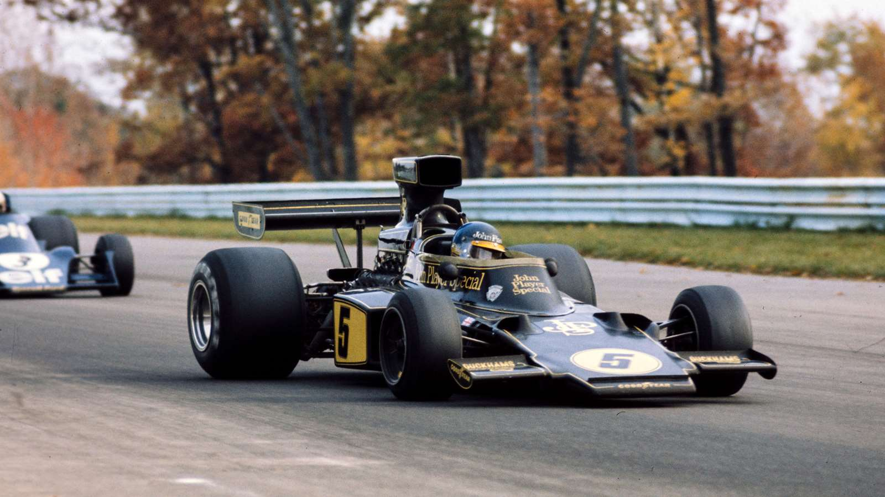
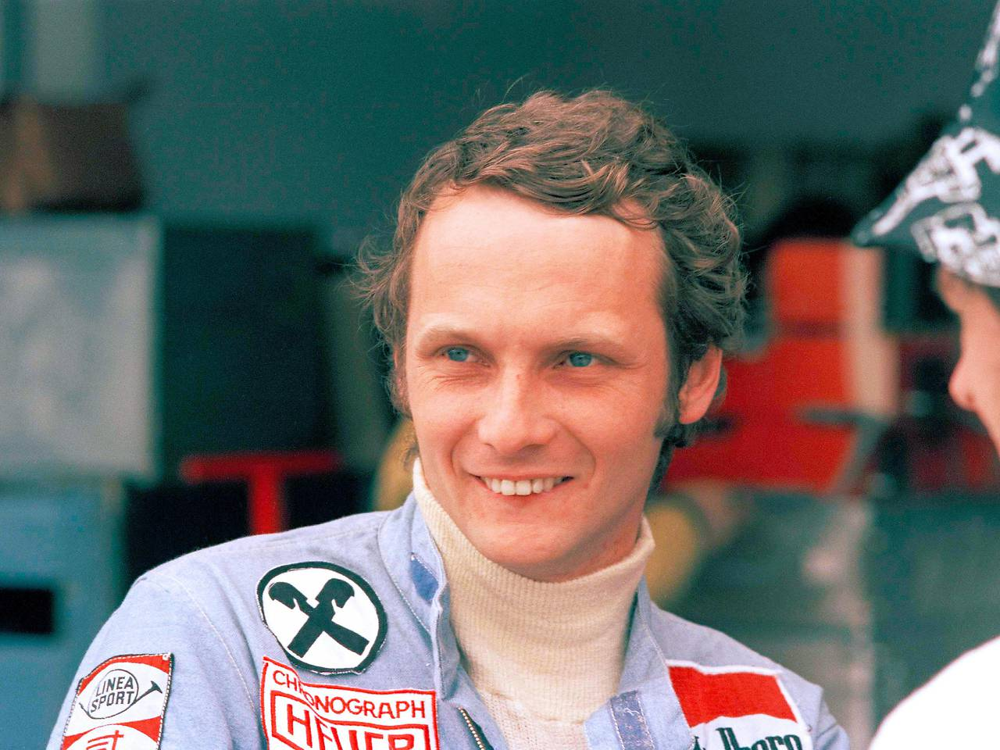

1960 - 1980
Lotus 72

Chapman's efforts produced one of the most remarkable and successful designs in F1 history. Taking the stressed engine layout technique from the Lotus 49 and adding advanced aerodynamics produced a car that was years ahead of its rivals. To begin with, however, problems with the handling of the car had to be overcome, due to a lack of 'feel' caused by the anti-dive suspension geometry – which was designed to prevent the nose of the car dipping significantly under braking – and the anti-squat set-up at the rear, which was supposed to stop the car 'squatting down' under acceleration. Once the suspension was modified, there were no further problems. The car caused a sensation amongst the media and fans, with many people clamouring to see the remarkable car in action.
A total of 9 chassis were built.
Niki Lauda

As an aviation entrepreneur, he founded and ran three airlines: Lauda Air, Niki, and Lauda. He was a Bombardier Business Aircraft brand ambassador. He was also a consultant for Scuderia Ferrari and team manager of the Jaguar Formula One racing team for two years. Afterwards, he worked as a pundit for German TV during Grand Prix weekends and acted as non-executive chairman of Mercedes-AMG Petronas Motorsport, of which Lauda owned 10%.
Having emerged as Formula One's star driver amid a 1975 title win and leading the 1976 championship battle, Lauda was seriously injured in a crash at the 1976 German Grand Prix at the Nürburgring during which his Ferrari 312T2 burst into flames, and he came close to death after inhaling hot toxic fumes and suffering severe burns. He survived and recovered sufficiently to race again just six weeks later at the Italian Grand Prix. Although he lost that year's title – by just one point – to James Hunt, he won his second championship the year after, during his final season at Ferrari. After a couple of years at Brabham and two years' hiatus, Lauda returned and raced four seasons for McLaren between 1982 and 1985 – during which he won the 1984 title by half a point over his teammate Alain Prost.